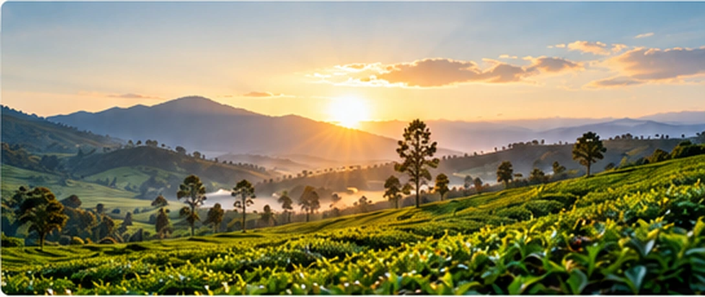
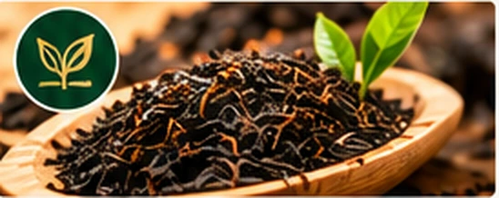
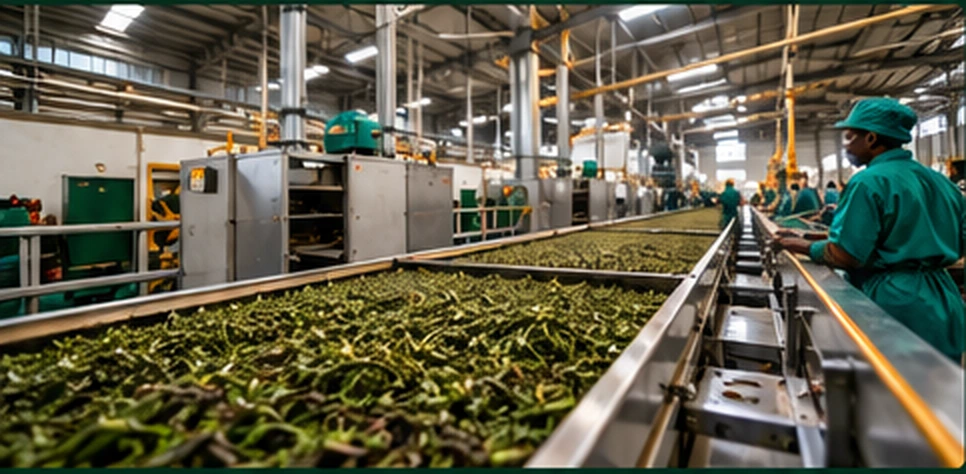

Boldness in Innovation
Embracing new ideas, technologies and opportunities to advance Kenyan tea.
About Us
Bidii Trends Engineering Ltd, trading as Bidii Tea, is a Kenyan tea trading and export company dedicated to connecting the richness of Kenya's tea industry with opportunities across international markets.

Our Story
Bidii Trends Engineering Ltd was established with a focus on connecting Kenya's tea production capabilities with international demand. Licensed by the Tea Board of Kenya to buy and export tea, we specialize in the supply of ready-made Kenyan Crush, Tear, Curl (CTC) black tea to international markets, including Dubai and other global destinations.
Our business activities have given us a deep understanding of the tea supply chain, international market requirements and the opportunities available for expanding the reach and value of Kenyan tea.
Building on our existing involvement in CTC tea exports, we aim to diversify into orthodox and specialty tea products, strengthen international business relationships and support the modernization of tea processing in Kenya.
The Spirit of BIDII
Our values are the foundation of everything we do. The name Bidii means hard work, and each letter represents a principle that guides our business.
Embracing new ideas, technologies and opportunities to advance Kenyan tea.
Building transparent, ethical and trustworthy commercial relationships.
Maintaining a strong commitment to the quality of our products and services.
Striving to meet the expectations of buyers across global markets.
Pursuing growth that creates meaningful opportunities throughout the tea value chain.
BIDII = HARD WORK
Our Vision
To become a leading Kenyan tea trading company connecting Kenya's tea resources with international markets while contributing to product diversification in the tea sector.
Our Mission
To facilitate the international supply of Kenyan tea, develop sustainable commercial partnerships, and pursue opportunities that enhance the competitiveness, quality, and value of Kenyan tea in global markets.
Bidii Business Activities
Our core business activities connect Kenya's tea supply chain with international demand, partnerships and long-term opportunities.

We supply ready-made Kenyan CTC black tea to international buyers, including customers in Dubai and other overseas markets.
We seek long-term relationships with international buyers, suppliers, manufacturers and other stakeholders across the tea value chain, while exploring forward contracting opportunities.
We aim to explore orthodox tea production and other value-added tea products to serve emerging markets and broaden the range of Kenyan tea available internationally.

Our Future Growth
We intend to build on our tea export activities by exploring opportunities across the wider tea value chain, from the supply of finished tea to processing technology, factory modernization and international market development.
We believe collaboration between Kenyan tea businesses and experienced international machinery manufacturers can create new opportunities for commercial growth, technical knowledge transfer and improved competitiveness.
Let's Partner for the Future